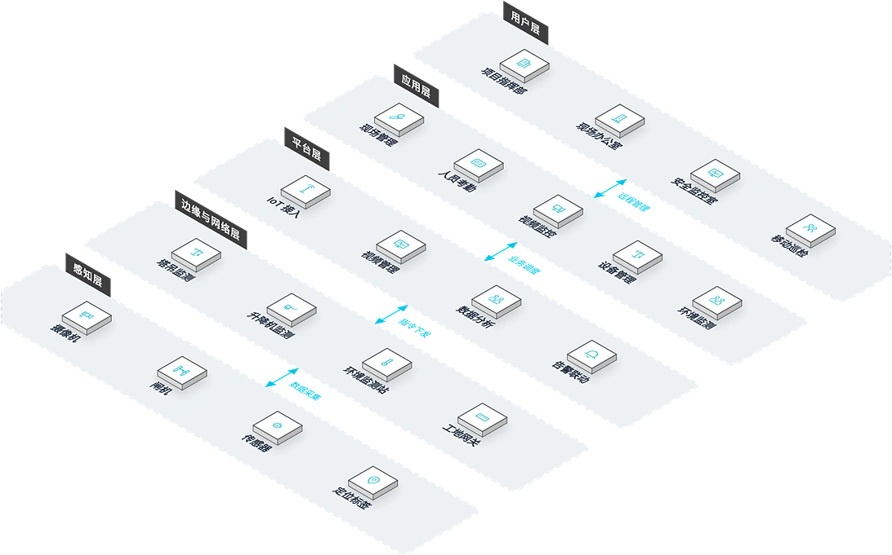

面向房建、市政、轨道交通、工业厂房等工程项目，提供覆盖人员、安全、质量、进度、物料、环境六大管理维度的智慧工地解决方案，解决工地人员管理混乱、安全隐患多、质量追溯难、进度失控的核心痛点，实现"一个平台管工地"。
方案概述
为房建、市政、轨道交通、工业厂房等工程项目提供覆盖人员、安全、质量、进度、物料、环境六大管理维度的智慧工地解决方案，解决工地人员管理混乱、安全隐患多、质量追溯难、进度失控的问题，实现"一个平台管工地"。
适用对象：房建工程、市政工程、轨道交通、工业厂房。
- AI 视觉分析在实测场景中保持高准确率
- 多端协同覆盖项目全角色
- 真正覆盖六大维度统一管理
收益：安全事故率降低 40%+，工期延误减少 25%，材料浪费降低 15%。
业务挑战
在土木工程施工现场，客户常面临人员管理混乱、安全隐患多、质量追溯难、进度不透明的难题，亟需一套覆盖人员、安全、质量、进度、物料、环境六大维度的统一管理平台。
人员管理混乱
工人流动性大，实名制落实难，考勤统计繁琐，工资发放纠纷多。
安全隐患多
深基坑、高支模、塔吊等危大工程风险高，巡检靠纸质记录，隐患整改难跟踪。
质量追溯难
工序验收资料分散，质量问题责任界定不清，整改闭环缺乏追踪。
进度不透明
施工进度依赖人工汇报，与实际偏差难以发现，工期延误风险大。
管理粗放拖累工期成本
人员、安全、质量、进度信息分散在纸质台账与各部门之间，隐患整改不及时、工期与成本偏差难以追责，项目管控风险持续累积。
六大维度统一管理
需要将人员、安全、质量、进度、物料、环境纳入一个平台统一管控。
现场数字化感知
需要 AI 视觉与环境监测实时感知现场状态，让隐患可发现、可闭环。
典型场景：
适用角色：项目经理、安全员、质检员、工长、监理工程师。
方案架构
智慧工地采用五层业务拓扑：项目指挥部、现场办公室等在各自办公室通过现场管理、人员考勤等应用开展业务，依托平台层统一调度；塔吊监测、升降机监测等边缘设备部署于现场，就近接入摄像机、闸机等感知设备，数据逐层汇聚、指令逐层下达，实现从管理办公室到现场设备的全链路贯通。

业务化布局：用户层为项目指挥部、现场办公室等管理办公室；应用层承载日常业务功能；平台层提供IoT 接入、视频管理等能力；边缘与网络层为塔吊监测、升降机监测等现场接入位置；感知层为摄像机、闸机等现场部署的设备。父子层级上下贯通，兄弟节点左右并列。
核心模块
人员实名制管理
人脸识别门禁与考勤统计一体，落实实名制，减少工资纠纷。
安全管理
AI 摄像头识别违规行为自动告警，隐患整改全程闭环跟踪。
质量管理
工序巡检、首件验收与整改闭环数字化，质量责任可追溯。
进度管理
实际进度与计划对比实时可见，偏差及时预警。
物料管理
材料进场、领用、消耗数字化管控，减少浪费。
环境管理
扬尘噪声在线监测，超标自动联动喷淋降尘。
集成能力：
- 各子系统数据汇聚至指挥中心统一看板
- AI 摄像头实时识别安全违规行为并告警
- 环境监测超标自动联动喷淋降尘
- 与 BIM 系统联动实现进度三维可视化
优势与交付
我们以智慧工地六大维度一体化设计与多年项目实践积累，为工程项目提供安全事故率与工期风险双下降的管理价值，并通过本地化实施、多端培训与持续运维保障落地。
差异化优势
AI 视觉分析
AI 视觉分析在实测场景中保持高准确率，违规行为自动识别，安全管理主动化。
六大维度一体化
真正覆盖人员、安全、质量、进度、物料、环境统一管理，一个平台管工地。
多端协同
微信小程序、PC Web、TV 看板、APP、H5 覆盖项目全角色，信息实时同步。
多年项目实践
在非洲多个工程项目落地实施，方案经不同规模工地验证，交付风险低。
离线操作支持
适配非洲本地网络环境，支持离线操作与数据同步，网络中断业务不停止。
BIM 联动
与 BIM 轻量化系统联动，进度、质量、安全问题三维可视化定位。
实施流程
需求调研
梳理项目管控重点与现有设施。
方案设计
输出六大维度部署与集成方案。
硬件部署
门禁道闸、摄像头、环境监测安装。
平台配置
组织、流程与告警规则配置。
系统集成
各子系统数据汇聚与 BIM 联动。
培训交付
多端使用培训与上线验收。
持续运维
远程运维支持与平台持续升级。
服务保障
客户价值
安全事故率有效降低，工期延误减少，材料浪费降低，项目管理精细化水平全面提升。
一年质保
远程运维支持
平台持续升级
定期巡检维护
客户案例
拉各斯联邦税务局 (FIRS) 项目智慧工地管理系统
背景：拉各斯联邦税务局 (FIRS) 项目建设。
挑战：工地人员出入频繁、安全管理依赖人工记录，项目方缺乏统一的数字化管理手段。
方案：部署覆盖人员、安全、质量、进度、物料、环境六大管理维度的智慧工地管理平台。
成果：系统在项目上稳定运行，实现安全事故率与工期风险双下降的管理价值。